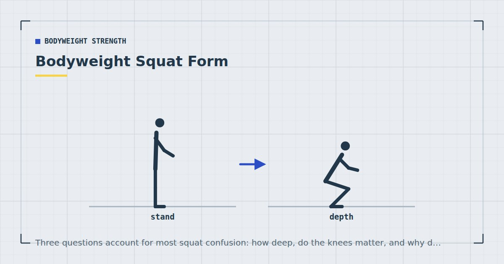

Bodyweight Strength
Bodyweight Squat Form: Depth, Knees and Heels Explained
Three questions account for most squat confusion: how deep, do the knees matter, and why do my heels come up. The answers are less dramatic than the internet suggests.

The bodyweight squat is the movement most people think they already know and most people perform in a slightly compromised way. It is also unusually surrounded by rules that turn out, on inspection, to be either oversimplified or simply wrong.
Here is the movement, followed by honest answers to the three questions that generate most of the confusion.
Setting up
Feet roughly shoulder-width or a little wider, toes turned out somewhere between five and thirty degrees. That range is deliberately wide, because the correct angle varies substantially between individuals depending on hip anatomy. Find yours by squatting a few times at different foot angles and keeping whichever feels most comfortable at depth.
Weight distributed across the whole foot, with the sense of gripping the floor slightly with your toes. Not on the heels, not on the balls of the feet.
Arms out in front as a counterbalance. This is not cheating; it genuinely helps you sit back further, and almost everyone squats deeper with the arms forward.
The movement
Push your hips back first, as though reaching for a chair behind you, and let the knees bend as a consequence rather than initiating with them. Descend under control for two seconds or so. Keep the chest facing forward rather than collapsing toward the floor. Go as deep as you can without the lower back rounding, then drive up through the middle of the foot.
The single most useful cue is spread the floor apart with your feet — imagining you are pushing the ground outward. This stops the knees collapsing inward without you having to consciously manage your knees, which usually creates a different problem.
How deep should you go?
As deep as you can while keeping your lower back neutral. For most people that is at or slightly below the point where the thigh is parallel to the floor. For some it is considerably deeper; for others, noticeably less.
Depth is limited by hip anatomy as much as by mobility, and hip sockets vary a lot between individuals in depth and orientation. Some people will never comfortably reach a deep squat regardless of how much they stretch, and that is a structural fact rather than a failing.
What matters more than absolute depth is that the depth you use is consistent. If you are trying to establish whether you are getting stronger, comparing fifteen shallow squats this week with fifteen deep ones last week tells you nothing.
Squat down until you feel your pelvis start to tuck under and your lower back begin to round. That point is your current limit. Work an inch above it. Over months of consistent training the point usually moves, but chasing it directly by forcing depth is how people end up with sore backs.
Do the knees matter?
Two separate questions get confused here, and they have different answers.
Knees travelling past the toes
Fine, and unavoidable for many people. The old rule that knees must never pass the toes appears to have come from a small study noting increased knee shear when they do — but preventing it forces the hips further back and increases stress on the lower back instead. You have moved the load, not removed it.
Anyone with long femurs relative to their torso will find that keeping the knees behind the toes makes a deep squat close to impossible. Let the knees travel forward as far as your ankle mobility comfortably allows.
Knees collapsing inward
This one does matter, particularly under load or fatigue. The knee is not designed to take much sideways force, and repeated inward collapse is worth correcting.
Fix: the spread-the-floor cue above. If it persists, it is usually a glute strength issue rather than a technique one, in which case adding the work in glute exercises at home tends to solve it over a few weeks.
Why your heels lift, and what to do
Heels lifting at the bottom of a squat is almost always ankle dorsiflexion range — your shin cannot travel far enough forward over your foot, so the heel rises to compensate.
Three responses, in order of usefulness:
Widen your stance and turn your toes out more. This changes the demand on the ankle and resolves it for a lot of people immediately. Try it before anything else.
Elevate your heels. Stand with your heels on a book about an inch thick, or a rolled edge of a mat. This is a legitimate long-term solution rather than a workaround; weightlifting shoes exist for precisely this reason.
Work on ankle mobility. Kneeling with one foot forward, drive the knee forward over the toes while keeping the heel down. Thirty seconds each side, most days. Progress here is slow and it will not resolve a squat this week, but it does accumulate — there is a fuller sequence in the mobility routine for people who sit all day.
What not to do is squat with lifting heels and hope it resolves. It shifts the load forward and is a reliable route to knee discomfort.
Rounding at the bottom
Sometimes called butt wink: the pelvis tucks under and the lower back rounds at the bottom of the squat. A small amount at maximum depth is common and probably not a problem for unloaded bodyweight squats.
A pronounced tuck that begins well before your deepest position is worth addressing, because it means you are finishing the movement with your spine rather than your hips. The fix is almost always to stop an inch or two higher, plus the same stance adjustments as for heel lift.
Most squat form problems resolve by changing your stance or reducing your depth. Very few of them resolve by trying harder.
When squats stop being hard
This happens quickly. Two-legged bodyweight squats stop providing a meaningful strength stimulus for most people within a couple of months, and the usual response — doing more of them — converts the exercise into a test of patience.
Better options, roughly in order:
- Slow the descent to three seconds. Free, immediate, and substantially harder.
- Add a pause at the bottom. Two or three seconds, removing any bounce.
- Move to single-leg work. Split squats, then Bulgarian split squats, then eventually pistol squat progressions. Roughly doubling the load per leg is what adding weight would otherwise do.
Since you cannot add external load at home, proximity to failure and harder variations are the levers available — and evidence comparing light and heavy loads found comparable muscle growth when sets are taken close to failure.1 Thirty easy repetitions is not close to failure; eight hard split squats are.
Where to go next
For a complete lower-body session using these principles, see how to train legs at home without equipment. For the progression ladders across every movement pattern, see bodyweight exercise progressions.
Frequently asked questions
How deep should a bodyweight squat be?
As deep as you can go while keeping the lower back neutral, which for most people is at or slightly below thigh-parallel. Hip anatomy varies substantially, so some people will never comfortably reach a deep squat regardless of mobility work.
Is it bad for knees to go past toes in a squat?
No. Preventing it forces the hips further back and shifts stress to the lower back instead. Let the knees travel forward as far as ankle mobility comfortably allows. Knees collapsing inward is the issue that genuinely matters.
Why do my heels lift when I squat?
Almost always limited ankle dorsiflexion — the shin cannot travel far enough forward over the foot. Widening your stance and turning the toes out more resolves it for many people. Elevating the heels on a book about an inch thick is a legitimate long-term solution.
What is butt wink and does it matter?
It is the pelvis tucking under and the lower back rounding at the bottom of a squat. A small amount at maximum depth is common and probably not a concern in unloaded bodyweight squats. A pronounced tuck starting well before your deepest position is worth addressing by squatting slightly higher.
Why are bodyweight squats too easy?
Because two legs sharing your bodyweight stops being a meaningful load within a couple of months. Slow the descent to three seconds, add a pause at the bottom, or move to single-leg variations rather than simply doing more repetitions.
Should my feet point straight ahead when squatting?
Not necessarily. Anywhere between about five and thirty degrees of toe-out is normal, and the right angle depends on your hip anatomy. Test a few angles and keep whichever feels most comfortable at depth.
Sources and further reading
- Schoenfeld BJ, Grgic J, Ogborn D, Krieger JW. “Strength and Hypertrophy Adaptations Between Low- vs. High-Load Resistance Training: A Systematic Review and Meta-analysis.” Journal of Strength and Conditioning Research, 2017;31(12):3508–3523. PubMed.
- Vieira AF, Umpierre D, Teodoro JL, et al. “Effects of Resistance Training Performed to Failure or Not to Failure on Muscle Strength, Hypertrophy, and Power Output: A Systematic Review With Meta-Analysis.” Journal of Strength and Conditioning Research, 2021. PubMed.
- NHS. Strength and Flex exercise plan.
- MedlinePlus, U.S. National Library of Medicine. Exercise and Physical Fitness.
Comments
Comments are not enabled yet. Add a hosted comment embed (Disqus, Commento, Giscus) inside this container when you are ready.